01 / Understand the journey
Start with the process map and access matrices.
Barangay Financial Management System by ODC · Visual user handbook · 31 October 2026
Follow the money, see who handles each step, and find the exact screen or button to use.
Start with the process map and access matrices.
Follow actual screens with numbered steps for setup, spending, revenue and reports.
Follow your role’s six steps, screen links and next-owner handoff.
This handbook describes the checked-out source, including the account page access migration. It does not confirm which migrations are installed in your connected deployment. The illustrated walkthroughs use actual demo screens. All names, amounts and references are training examples.
Start at 1. Complete setup, follow the spending or collection branch, then reconcile the resulting records. Each box names the responsible role and who saves in the current live app.
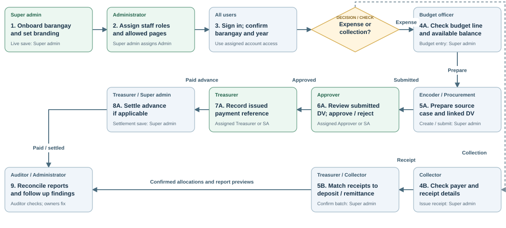
The named staff role checks and coordinates its work; the save line identifies who can perform the current live action. SA means Super admin.
Rejected DVs return to the preparer for a corrected new case. Detailed charts below show rejection, budget shortfalls, partial matching and advance balances.
Follow the account setup sequence before any financial work. A barangay sign-in link identifies the workspace; saved membership and page choices determine access.
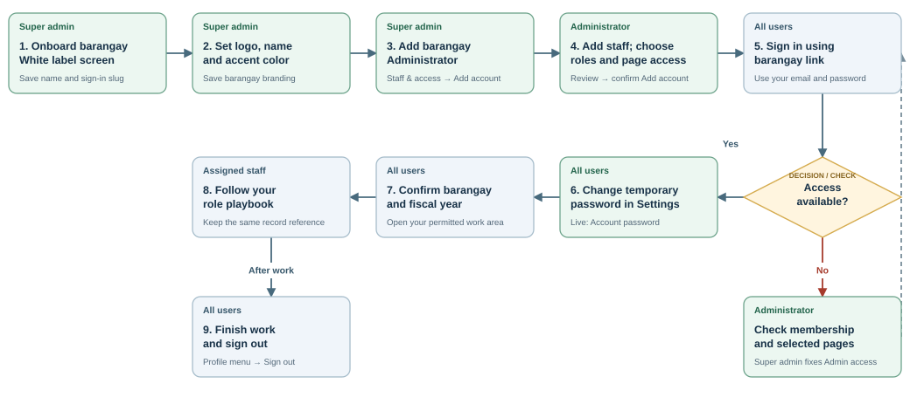
Custom page selections replace the account’s role defaults for the selected barangay. Settings remains available when no financial pages are selected.
An Administrator can manage staff; only a Super admin manages Administrator roles or White label. A role’s page access does not add financial posting authority.
All five expense sources converge on a linked disbursement voucher (DV). Follow the decision labels before passing the same case and voucher references to the next role.
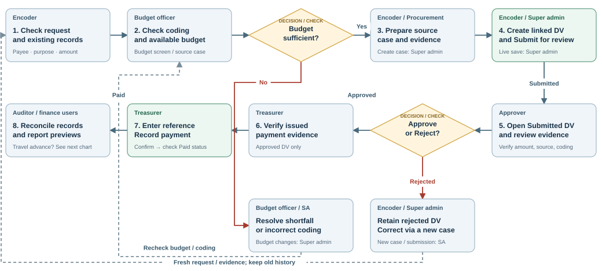
Sources: Procurement (PR → RFQ → Purchase Order → AIR), Payroll, Recurring fees, Travel or SK transfer. Non-procurement cases start Ready for DV.
Assigned Approvers can approve/reject; assigned Treasurers can record payment. Ordinary self-approval is blocked. The app has no Return/edit/resubmit path for a rejected DV; payment records the full amount and does not send money.
Procurement officer (PO) coordinates the document work; Super admin advances the current system stages. A Purchase Order is a document stage, distinct from the PO role abbreviation.
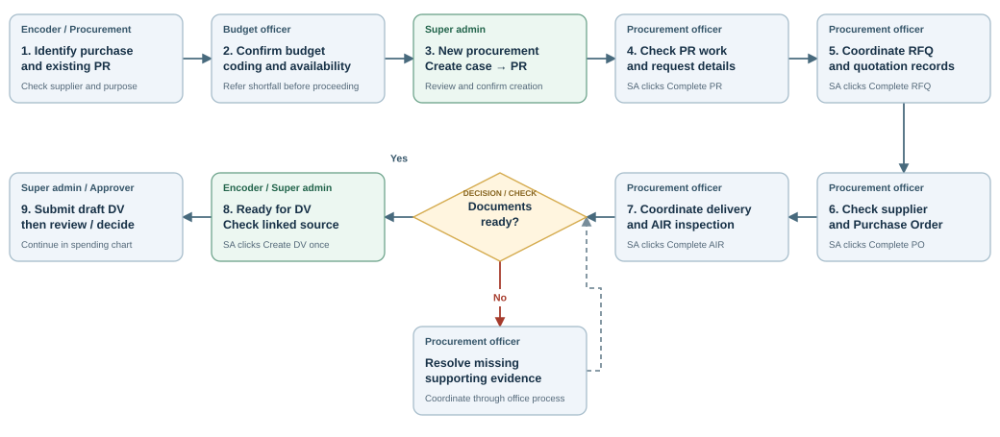
Send the same procurement case reference, supplier details and supporting records to the Encoder / Super admin for DV preparation. Procurement alone does not grant the Disbursements page.
The document-readiness diamond is an office check, not an implemented certification button. Stage changes track progress; they do not produce official PR, RFQ, PO or AIR documents or validate their evidence.
Start only after a travel voucher is paid. Track the accountable person’s use of the advance, accepted expenses and returned cash without recording a second payment.
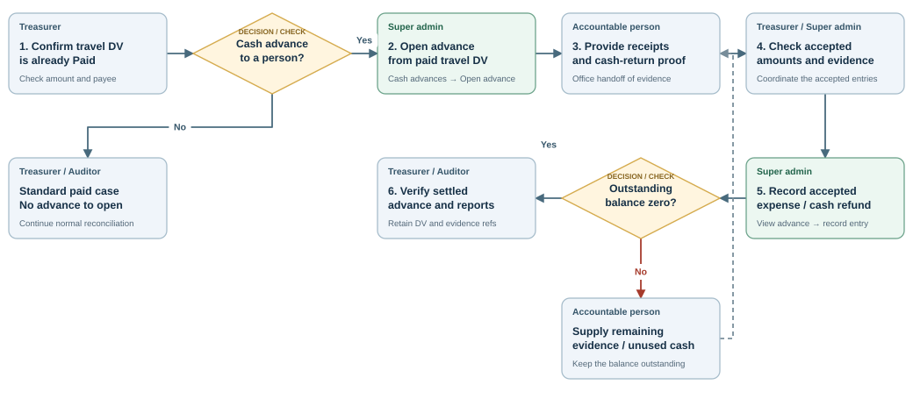
Current live saves for opening an advance and recording liquidation/refund entries require Super admin access. Treasurer reviews the balance and evidence; the accountable person is an office participant, not an additional app role.
Example: ₱8,900 advance − ₱8,000 accepted expenses − ₱900 refund = zero. Formal liquidation submission, due-date review and separate approval are not implemented; follow your established review process.
Follow each receipt into its bank deposit or treasury remittance. Collector prepares and checks; Treasurer checks treasury evidence; Super admin records receipts and matching batches in the current live app.
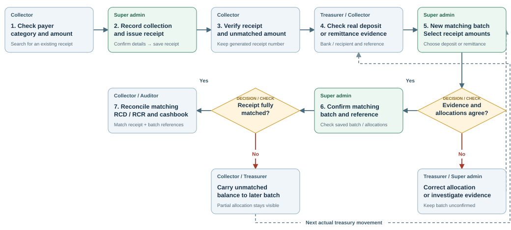
A bank deposit moves previously collected cash into the bank; it is not additional revenue. A treasury remittance reduces cash and increases remitted collections. Allocations may be partial and cannot exceed unmatched amounts.
To correct an issued receipt, coordinate with Super admin: an unallocated issued receipt can be voided and stays in history. A receipt already allocated to a batch cannot be voided through that action.
Review the spending and revenue branches together. Findings return to the responsible owner; staff access issues return to the Administrator or Super admin.
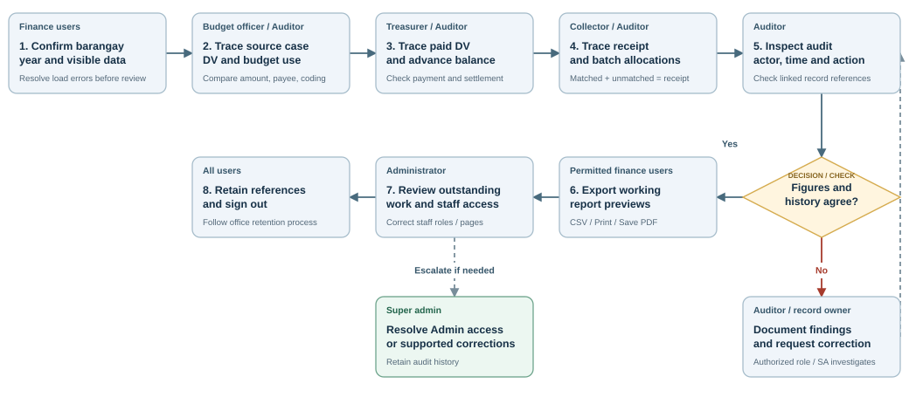
Auditor reviews and reports findings; it does not edit records. The current audit page shows the latest loaded events. Reports depend on the account’s visible records; check scope before comparing totals.
These are working report previews and system copies. Formal period lock/reopening, archived snapshots and several prescribed report templates remain pending. A review here does not complete an official period close.
Set up the barangay and access first. Spending and revenue then follow their own linked records.
Create barangay → branding → administrator
Create staff accounts → assign roles
Sign in → confirm barangay and year
Code + category + appropriation
Procurement / payroll / bill / travel / SK
Draft → Submitted → Approved → Paid
Paid travel DV → expenses + refund
Payer + purpose + category + amount
Bank deposit or treasury remittance
Report previews → CSV / Print → history
Role defaults control the sidebar and direct page URLs. An account-specific selection can replace these defaults in one barangay.
| Role | Budget | Expense pages | Disbursements | Revenue | Advances | Audit |
|---|---|---|---|---|---|---|
| Super admin | All | All | All | All | All | All |
| Administrator | Yes | All six | Yes | Yes | Yes | Yes |
| Encoder | Yes | All six | Yes | — | Yes | — |
| Procurement officer | Yes | Procurement only | — | — | — | — |
| Budget officer | Yes | All expense cases | Yes | — | Yes | — |
| Approver | Yes | All expense cases | Yes | — | Yes | — |
| Treasurer | Yes | All six | Yes | Yes | Yes | — |
| Collector | — | — | — | Yes | — | — |
| Auditor | Yes | All six | Yes | Yes | Yes | Yes |
Only allowed pages appear in navigation, search and shortcuts. A direct URL to an unchecked page is blocked. Dashboard and Reports are included in all role defaults; Settings always remains available.
In Staff & access, Customize pages lets an administrator check or uncheck financial pages for one person. The selection applies across all of that person’s roles in this barangay. Use role defaults restores the active-role union.
Access levels determine the live application actions. Staff role labels do not currently enable financial posting through the app.
| Action | Super admin | Administrator | Staff (all 7 roles) |
|---|---|---|---|
| Read financial records | All barangays | Assigned barangays | By record-access matrix |
| Add budget / case / voucher; submit DV | Yes | Read only | Read only |
| Approve / reject DV | Yes, including own vouchers; audited | With Approver role | Assigned Approver in this barangay |
| Record payment | Yes | With Treasurer role | Assigned Treasurer in this barangay |
| Record receipt, deposit or liquidation | Yes | No | No |
| Create barangay; change White label | Yes | No | No |
| Add / deactivate / reactivate staff roles | Any barangay | Own administered barangays | No |
| Grant / deactivate / reactivate Administrator role | Yes | No | No |
| Print / export available report previews | Yes | Yes | Yes, with visible records |
| Customize account pages | Staff and administrators | Own barangay’s staff | No |
| Change own password in Settings | Yes | Yes | Yes |
Financial actions save to the selected barangay’s live records. Transaction buttons use the same action labels in Demo and Live mode.
Finance actions use browser data at every demo access level. Demo behavior does not grant live staff posting rights.
For every role · Entry: /login or the barangay’s /b/<slug> sign-in link
Use the address provided by your administrator. A branded sign-in link identifies the barangay; it does not grant membership.
Select Sign in. Live access is determined from your account; the “Sign in as” selector appears only in demo mode.
Confirm the barangay, displayed fiscal year and mode banner before using a financial action.
Open Settings → Account password. Enter and confirm an 8–72 character password → Change password.
The sidebar shows your allowed pages. Sign-in opens your first available page. If no financial pages are selected, you enter Settings.
Open the profile menu → Sign out.
Workspace: Dashboard, Budget
Spending: expense cases, five
source workflows, vouchers, advances
Revenue: receipts and matching
Management:
reports, audit, staff, settings
Use the header switcher when multiple authorized barangays are available. A barangay subdomain fixes the workspace. Staff management also has its own barangay selector; check it separately.
“Membership pending” means an administrator must assign active membership. “Workspace setup pending” or “setup needed” requires system setup. A successful sign-in alone does not ensure access.
Follow these steps in your workspace. Where shown, an orange outline marks the control to use.
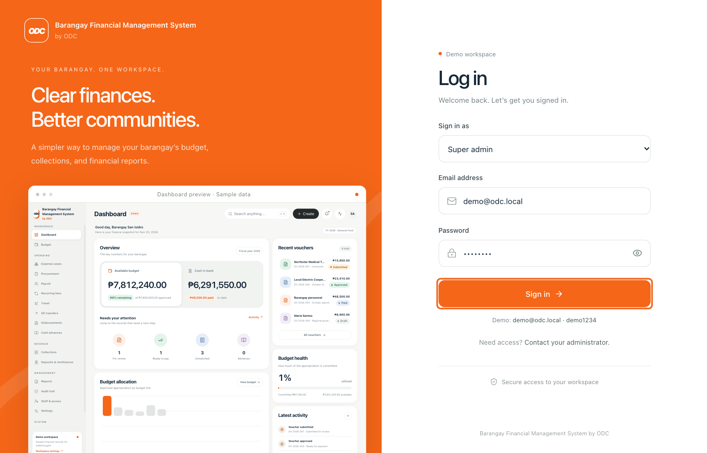
Follow these steps in your workspace. Where shown, an orange outline marks the control to use.
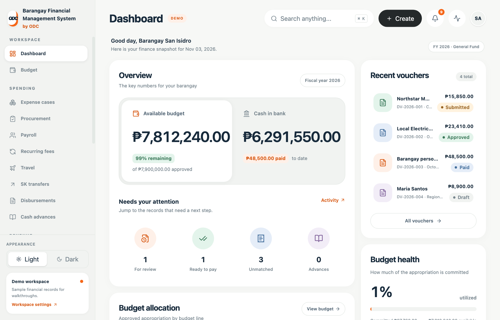
Follow these steps in your workspace. Where shown, an orange outline marks the control to use.
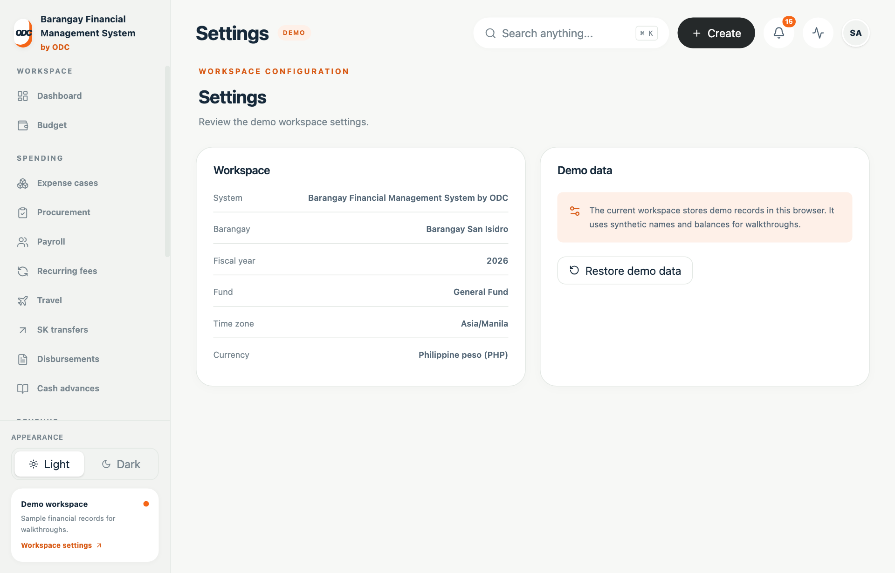
Current live actor: Super admin · Screens: White label and Staff & access
Open White label → the barangay onboarding form. Enter the barangay name and its sign-in slug → Create barangay.
Choose the barangay in Branding scope. Set its name, logo and accent color → Save changes. Use System default for the shared identity.
Review the barangay link. If you change the slug, use Save link and distribute the updated address through your usual process.
Choose Add its administrator, or open Staff & access. Select the barangay → Add account → role Administrator.
Enter full name and email. Set an 8–72 character temporary password for a new sign-in account → Add to the selected barangay.
Select that barangay in the header. Confirm its name, then proceed to Budget. Use the audit trail to trace each workflow action.
The barangay has a sign-in link, saved branding, an active administrator membership and a selectable workspace.
A recognized existing staff account keeps its sign-in password. Adding a membership does not create a second person.
Follow these steps in your workspace. Where shown, an orange outline marks the control to use.
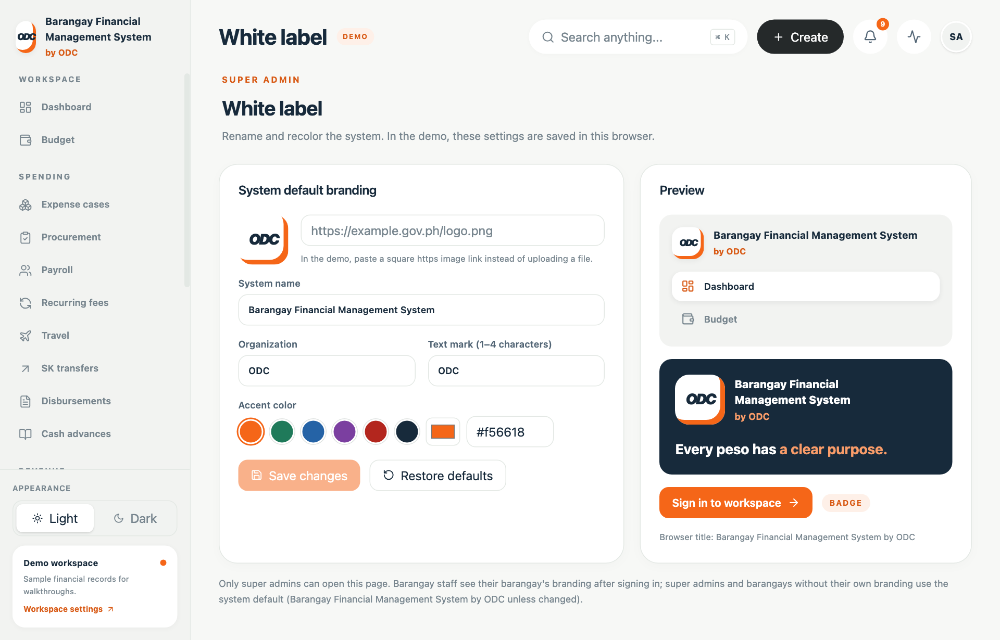
Current live actors: Administrator or Super admin · Screen: Staff & access
Confirm the Staff & access selector
Role defaults select the initial pages
One selection per person and barangay
Sidebar and direct URLs follow the selection
Confirm the target barangay. Enter full name, email and a temporary password for a new account.
The page checkboxes start with role defaults. For multiple active roles, defaults combine their pages.
Check extra pages or uncheck unwanted pages. The resulting custom selection replaces role defaults for this person in this barangay.
Choose Add to [barangay]. Membership and any custom page selection are saved together.
Find the person → Customize pages → adjust checkboxes → Save page access. Use role defaults restores the role-based selection.
Have the person reload. Check their sidebar and available records. Deactivate or Reactivate still controls each separate role membership.
Administrators can customize staff in their own barangays. Only Super admins can customize an Administrator’s pages. Super admins always retain every page.
Settings always remains available. Staff & access and White label are reserved for their administrator roles and are not financial-page checkboxes.
Follow these steps in your workspace. Where shown, an orange outline marks the control to use.
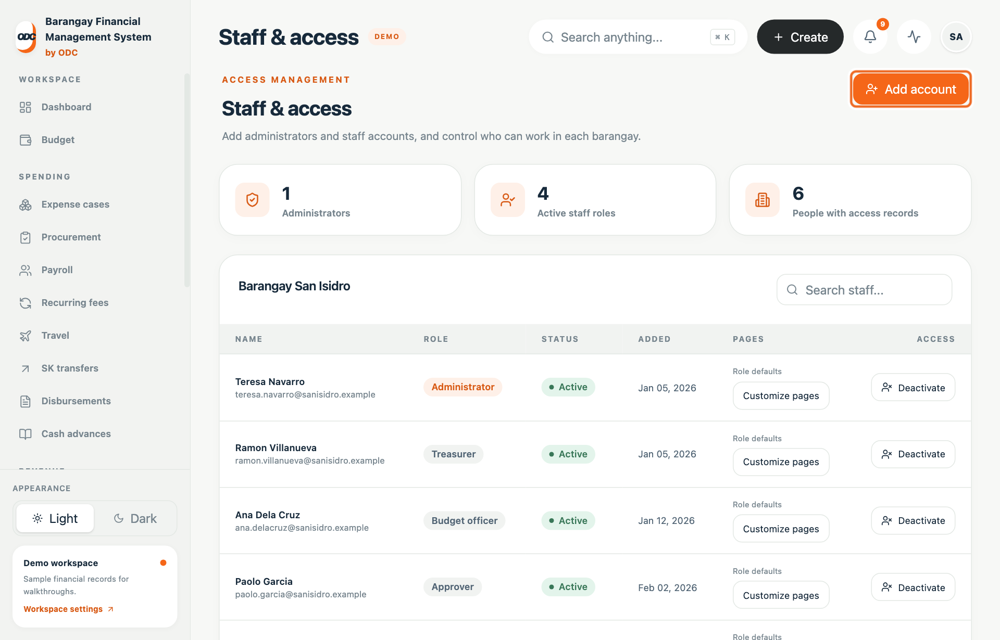
Follow these steps in your workspace. Where shown, an orange outline marks the control to use.
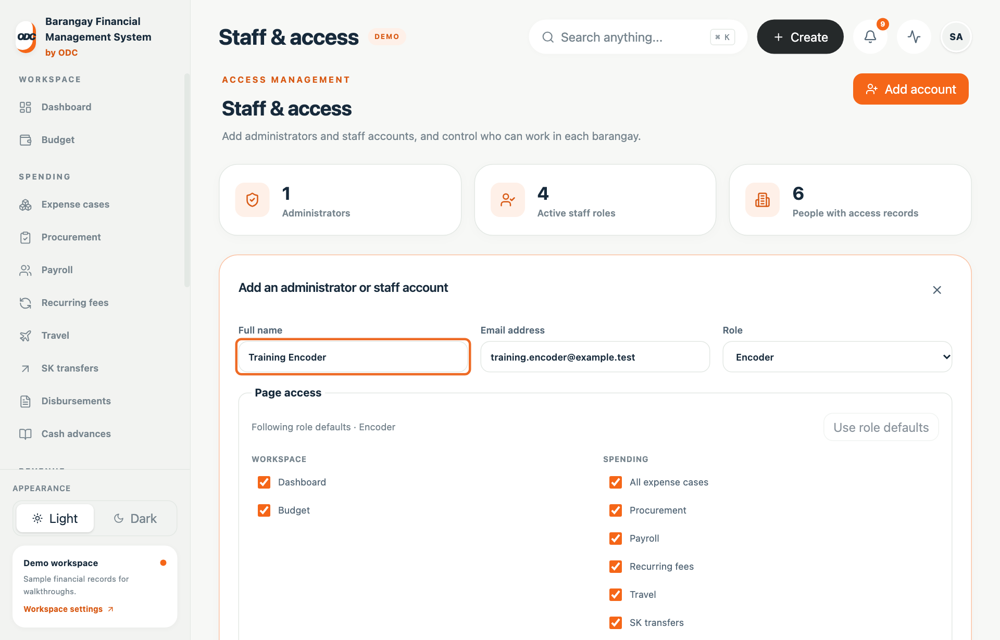
Follow these steps in your workspace. Where shown, an orange outline marks the control to use.
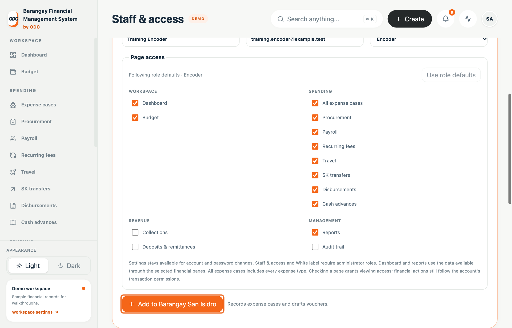
Follow these steps in your workspace. Where shown, an orange outline marks the control to use.
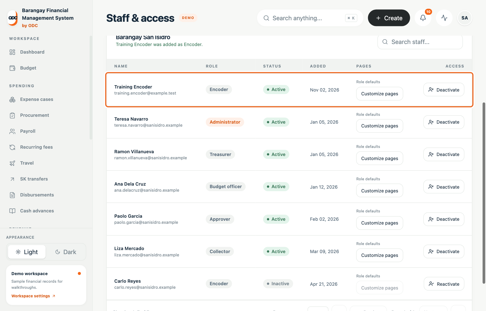
Follow these steps in your workspace. Where shown, an orange outline marks the control to use.
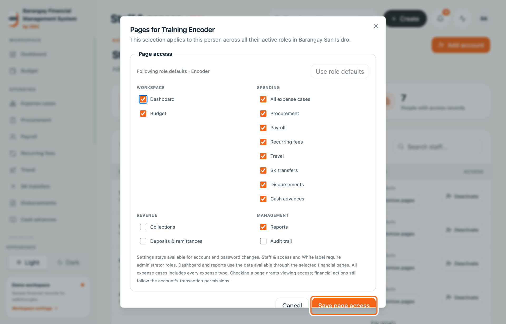
Current live actor: Super admin · Intended staff owner: Budget officer · Screen: Budget
Check Total appropriation, Obligated and Available to commit. Search for an existing account before adding another.
Enter Code, Budget line name, Category and Appropriation in pesos.
Use Personnel Services, Maintenance & Operations, Capital Outlay or Transfers.
Use a unique code and an amount greater than zero. Confirm the saved row and the updated total.
Select this line when creating the source case. The form displays its current available amount.
Add code MOOE-TRAIN-01, name Community supplies, category Maintenance & Operations, appropriation ₱50,000.00. A submitted ₱10,000 DV leaves ₱40,000 available.
In this version, Submitted, Approved and Paid vouchers count as committed. Draft and Rejected vouchers do not. Paying a voucher does not restore its budget authority.
Follow these steps in your workspace. Where shown, an orange outline marks the control to use.
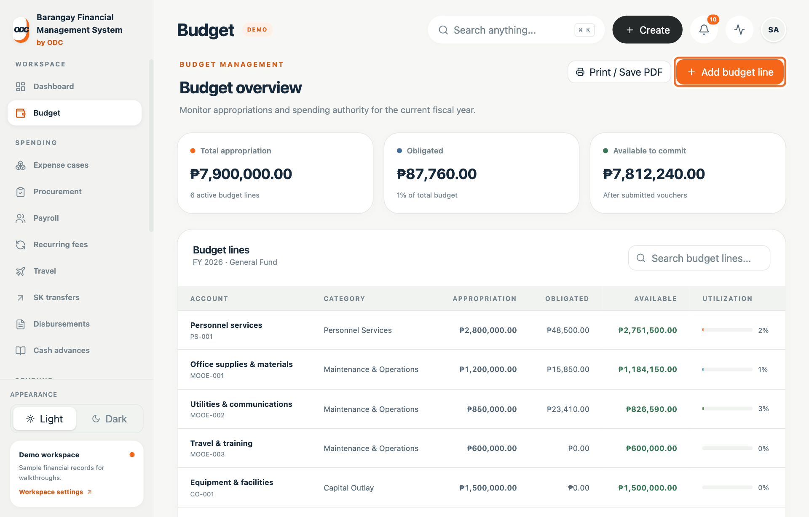
Follow these steps in your workspace. Where shown, an orange outline marks the control to use.
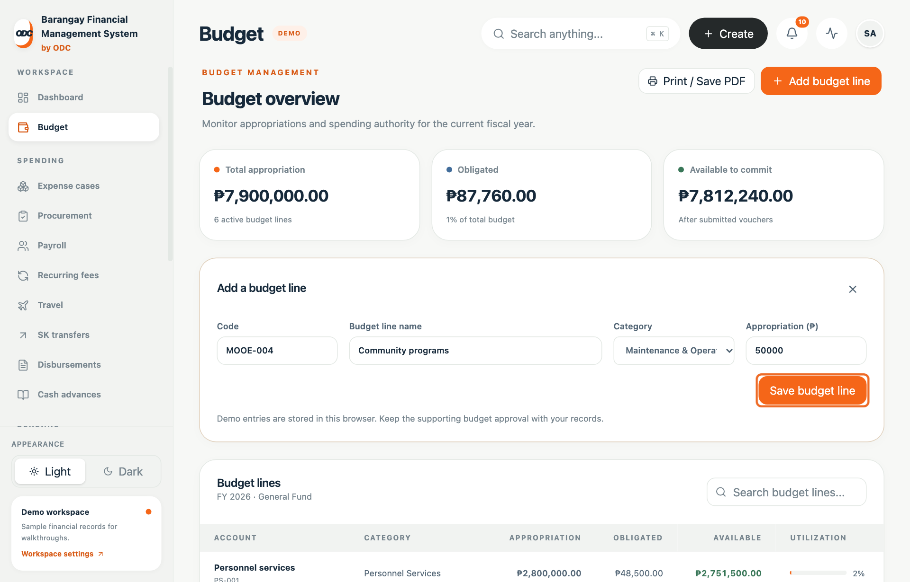
Follow these steps in your workspace. Where shown, an orange outline marks the control to use.
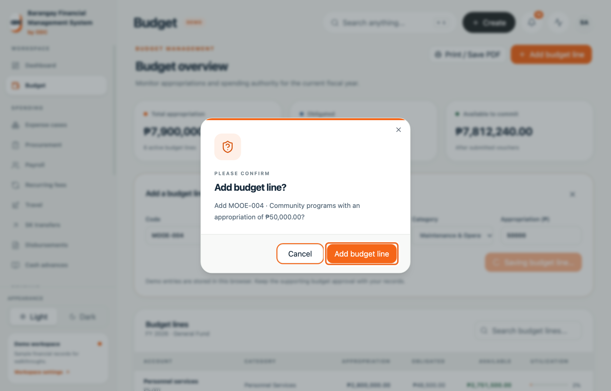
Follow these steps in your workspace. Where shown, an orange outline marks the control to use.
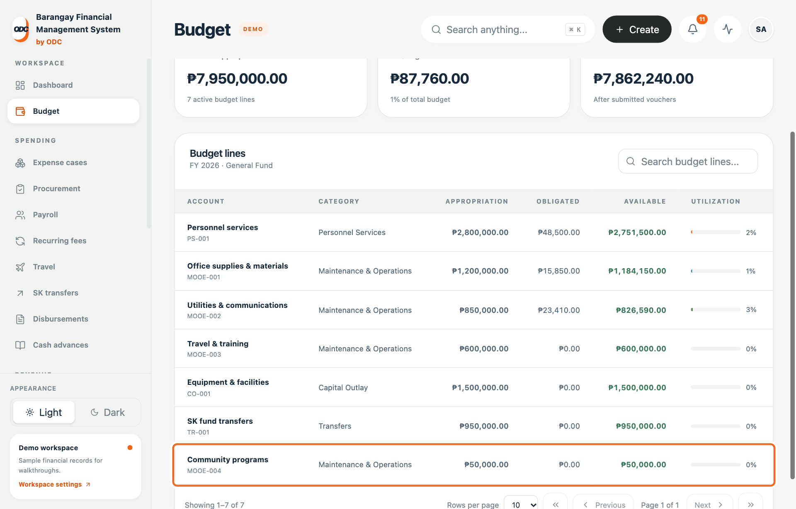
Current live actor: Super admin · Intended staff owners: Encoder and Procurement officer · Screen: Procurement
Purchase Request
Request for Quotation
Purchase Order
Acceptance and Inspection Report
Create one linked voucher
Fill Payee / recipient, Amount, Purpose and Budget line. The expense type is already Procurement.
Confirm the reference, amount and initial PR stage in the register.
Choose Complete PR, Complete RFQ, Complete PO and Complete AIR in order. Each action moves the same case to the next stage.
This becomes available at Ready for DV. The voucher inherits the case’s payee, purpose, amount and budget line.
Open Disbursements and find the linked draft. Continue with Submit for review and independent approval.
One purchase case is linked to one draft voucher. Once linked, its next action is View DV rather than creating another voucher.
Follow these steps in your workspace. Where shown, an orange outline marks the control to use.
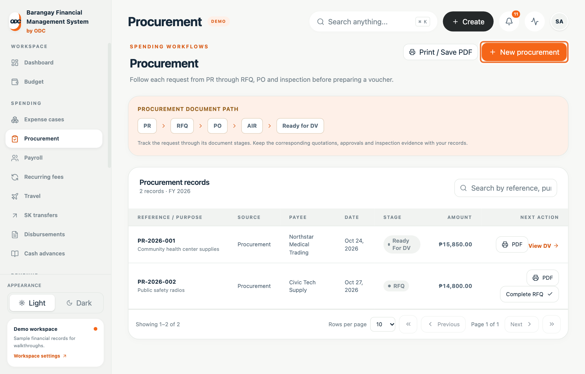
Follow these steps in your workspace. Where shown, an orange outline marks the control to use.
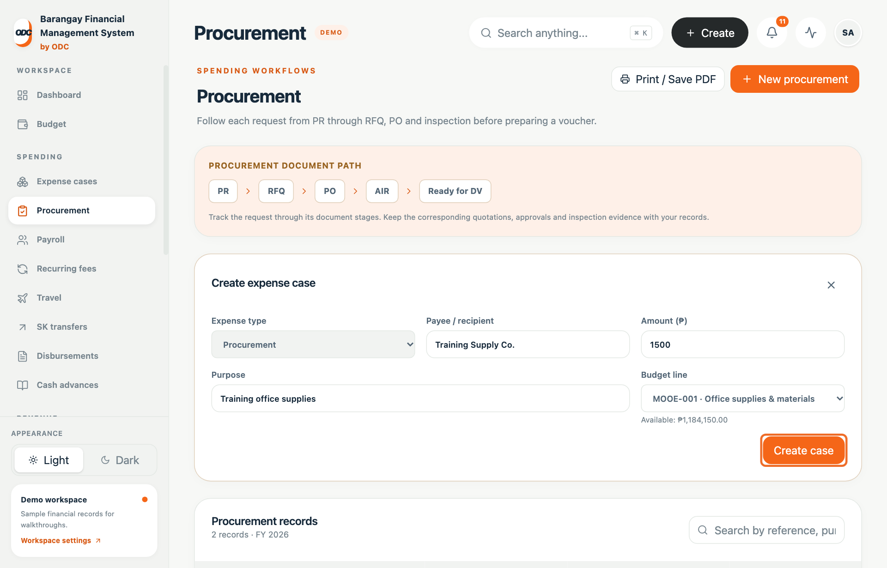
Follow these steps in your workspace. Where shown, an orange outline marks the control to use.
Follow these steps in your workspace. Where shown, an orange outline marks the control to use.
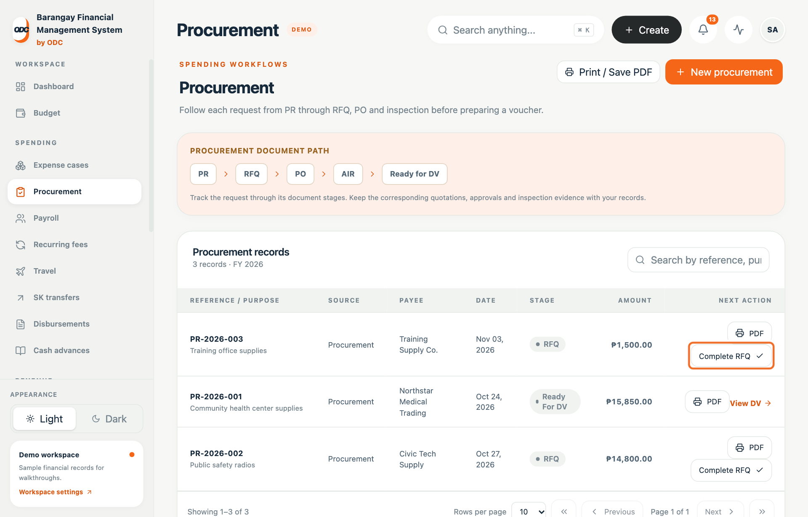
Follow these steps in your workspace. Where shown, an orange outline marks the control to use.
Follow these steps in your workspace. Where shown, an orange outline marks the control to use.
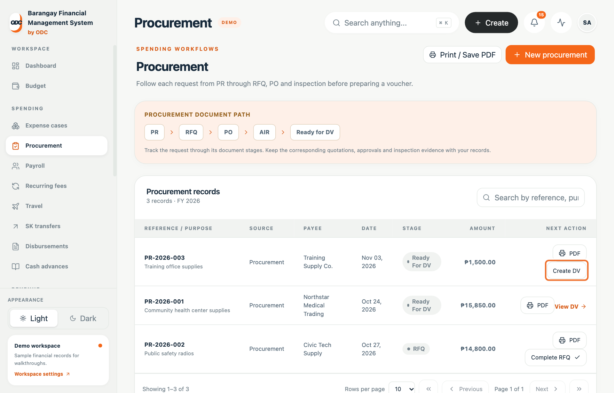
Current live actor: Super admin · These routes use the same short expense-case form.
| Sidebar route | Enter in the current form | Prepare alongside the case; detailed fields are planned |
|---|---|---|
| Payroll | Payee, total amount, purpose / payroll period, budget line | Payroll breakdown, personnel, deductions and certifications |
| Recurring fees | Provider, bill amount, purpose / billing period, budget line | Bill, service account and payment evidence; no automatic scheduler |
| Travel | Accountable person / payee, amount, purpose, budget line | Travel order, itinerary and expense evidence; select advances only when applicable |
| SK transfers | Recipient, transfer amount, purpose, budget line | Transfer authority, recipient details and acknowledgement |
Payroll / Recurring fees / Travel / SK transfers
Complete the same five basic fields
Non-procurement cases skip PR / RFQ / PO / AIR
Submit → approve or reject → payment
After a travel DV is Paid, it can appear under Cash advances. Open an advance only if it represents money given to an accountable person, not every travel payment.
The source kind remains SK fund transfer. Recording this outgoing payment does not create a receipt in another entity’s books.
Follow these steps in your workspace. Where shown, an orange outline marks the control to use.
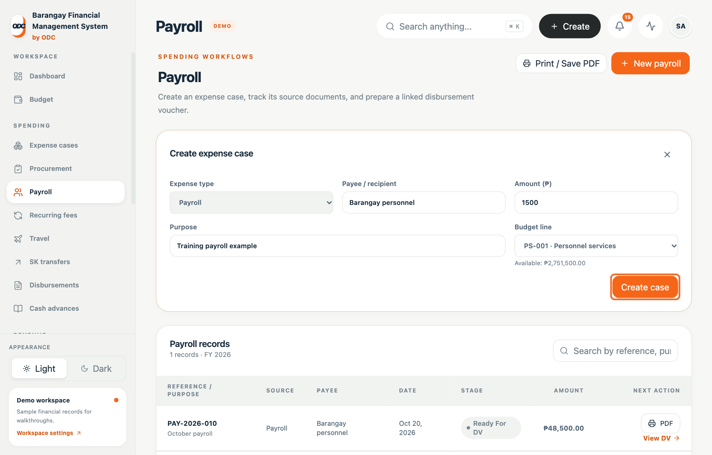
Follow these steps in your workspace. Where shown, an orange outline marks the control to use.
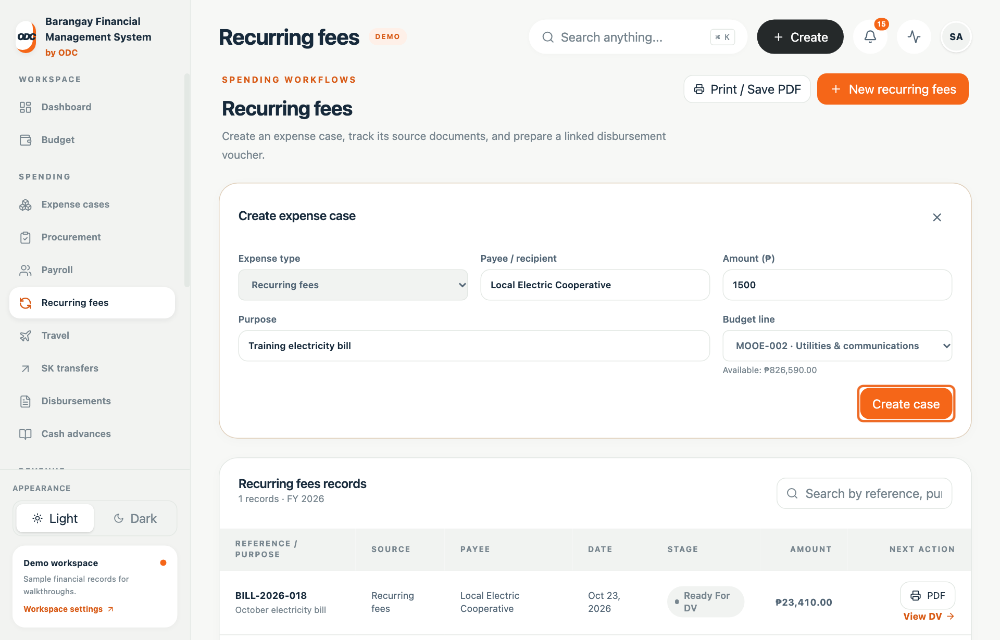
Follow these steps in your workspace. Where shown, an orange outline marks the control to use.
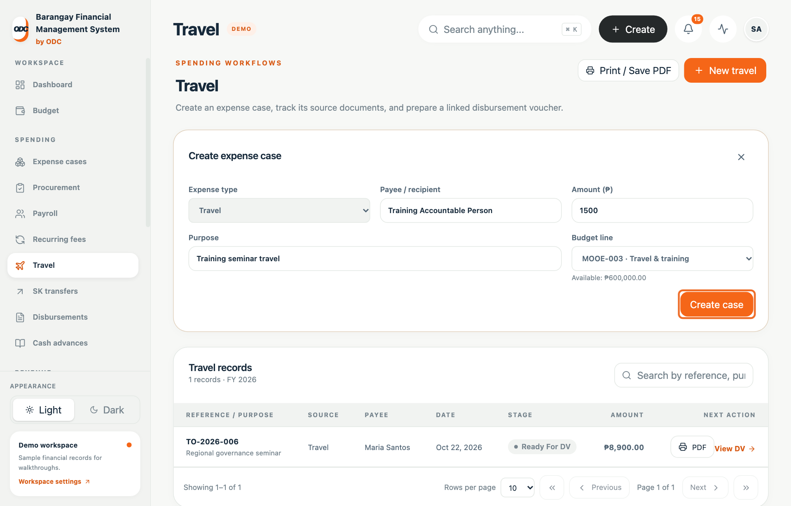
Follow these steps in your workspace. Where shown, an orange outline marks the control to use.
Live: Super admin prepares/submits; assigned Approver decides; assigned Treasurer records payment · Screen: Disbursements
From its source case choose View DV, or search Disbursements by number, payee or purpose. Click the row to open its detail panel.
Check payee, amount, purpose, source document and budget line against the supporting records.
The creator selects Submit for review. Insufficient available appropriation blocks submission.
An assigned Approver reviews the Submitted voucher and chooses Approve or Reject. Ordinary self-approval is blocked; Super admin self-approval is audited.
For an Approved voucher, enter Check / payment reference → Record payment. The current app records the full voucher amount.
Confirm Paid and the saved payment reference. Check the report previews and, where authorized, the Audit trail.
The current interface has no Return / edit / resubmit workflow. Keep the rejected record. If a corrected request is authorized, create a new expense case and linked DV.
Record payment saves the transaction and its reference. It does not initiate a bank transfer or issue a physical check.
Follow these steps in your workspace. Where shown, an orange outline marks the control to use.
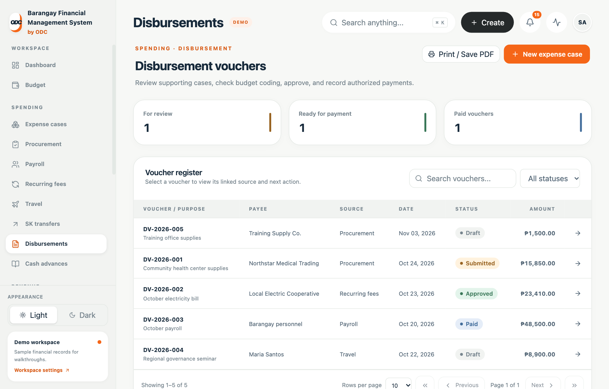
Follow these steps in your workspace. Where shown, an orange outline marks the control to use.
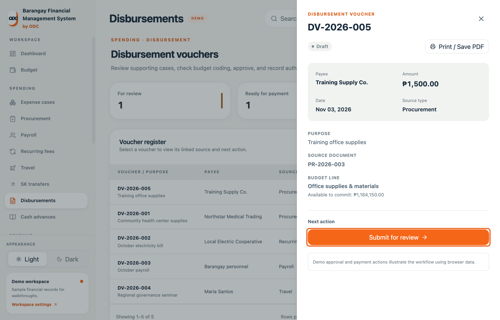
Follow these steps in your workspace. Where shown, an orange outline marks the control to use.
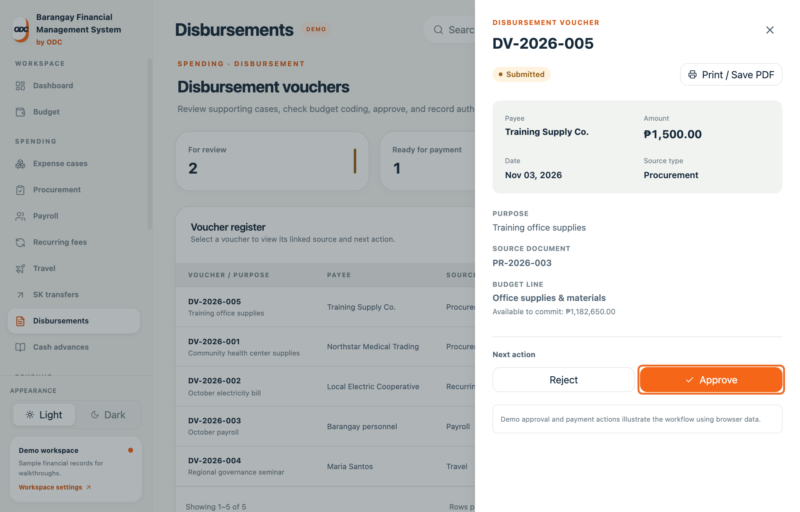
Follow these steps in your workspace. Where shown, an orange outline marks the control to use.
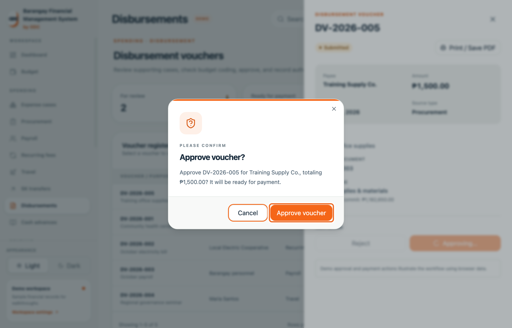
Follow these steps in your workspace. Where shown, an orange outline marks the control to use.
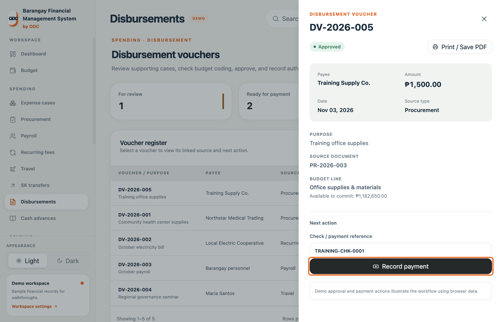
Follow these steps in your workspace. Where shown, an orange outline marks the control to use.
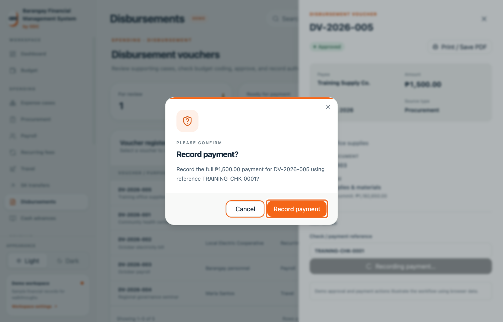
Follow these steps in your workspace. Where shown, an orange outline marks the control to use.
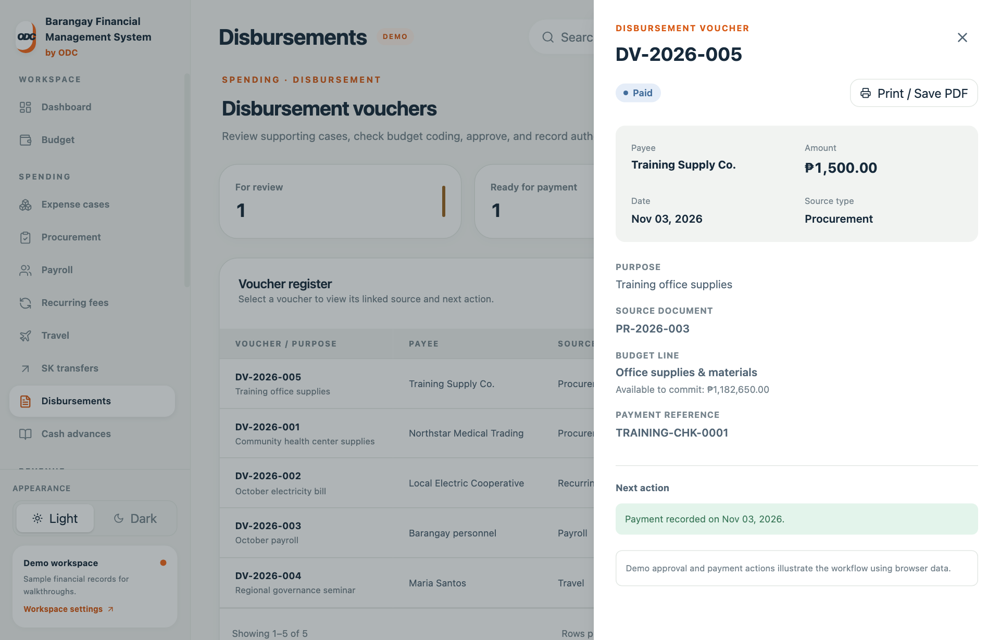
Current live actor: Super admin · Intended staff owner: Treasurer · Screen: Cash advances
Cash actually given to accountable person
One advance per voucher
Each entry reduces the outstanding balance
Advance is fully settled
Open Cash advances. Under Paid travel vouchers eligible for an advance, confirm this is a genuine accountable cash advance.
The payee becomes the accountable person and the paid DV amount becomes the advance amount.
Review the Advance, Settled and Outstanding amounts.
Choose Accepted expense, enter Description / evidence reference and Amount → Record entry. Use an amount no greater than the remaining balance.
Choose Cash refund and enter its evidence reference and amount. Confirm Outstanding reaches zero when all funds are accounted for.
Advance ₱10,000
Accepted expenses ₱8,500
Cash refund
₱1,500
Outstanding ₱0
Follow these steps in your workspace. Where shown, an orange outline marks the control to use.
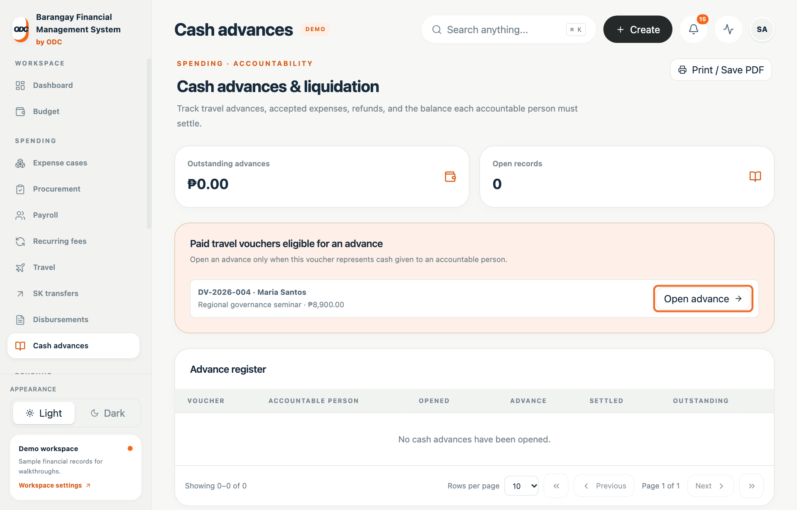
Follow these steps in your workspace. Where shown, an orange outline marks the control to use.
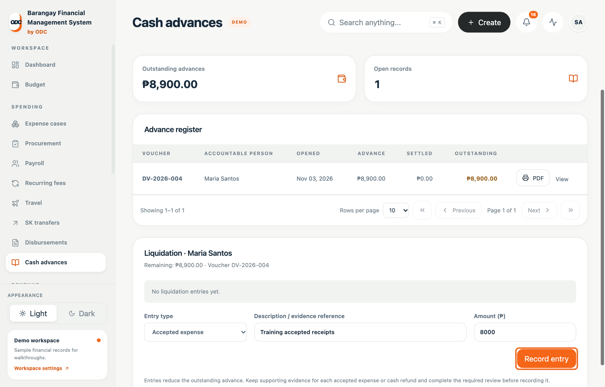
Follow these steps in your workspace. Where shown, an orange outline marks the control to use.
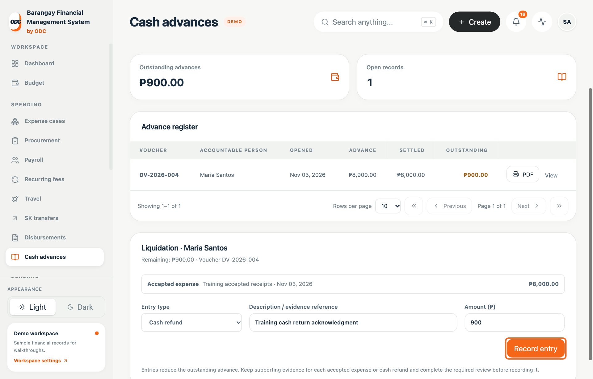
Follow these steps in your workspace. Where shown, an orange outline marks the control to use.
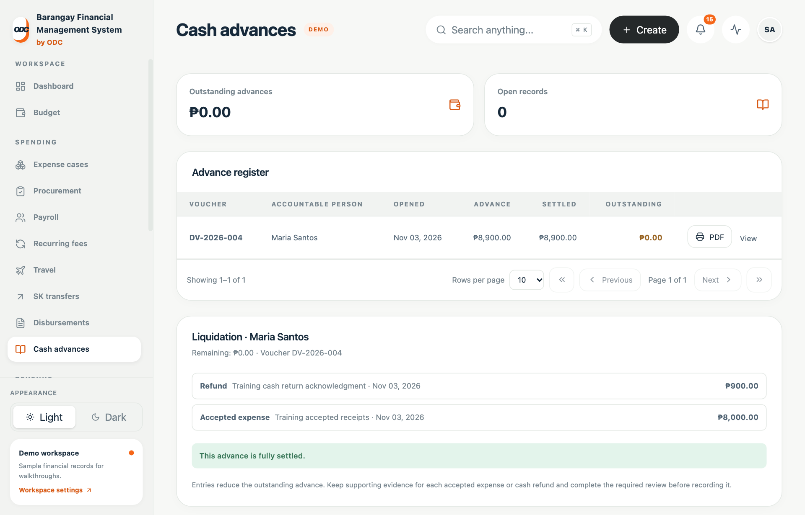
Current live actor: Super admin · Intended staff owner: Collector · Screen: Collections
Enter Payer, Revenue category, Amount and Purpose / particulars.
Confirm the payer, purpose and peso amount before saving. The current form does not offer a payment-method selector.
In a live workspace this records a live collection. Confirm its receipt number and Issued status in the register.
A newly issued receipt starts with its full amount awaiting matching. It is ready to allocate to a deposit or remittance.
Prepare a matching batch after the actual bank deposit or treasury remittance is supported by its reference.
Clearance fees · Certification fees · Other income · Barangay aid · Permit fees
Record a ₱500 clearance collection. The receipt is Issued; its Unmatched amount is ₱500. The receipt number is generated automatically.
Follow these steps in your workspace. Where shown, an orange outline marks the control to use.
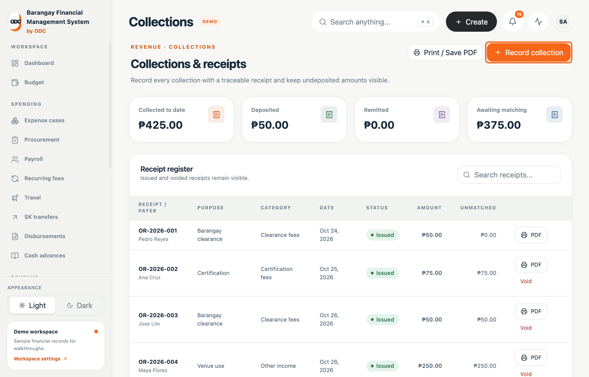
Follow these steps in your workspace. Where shown, an orange outline marks the control to use.
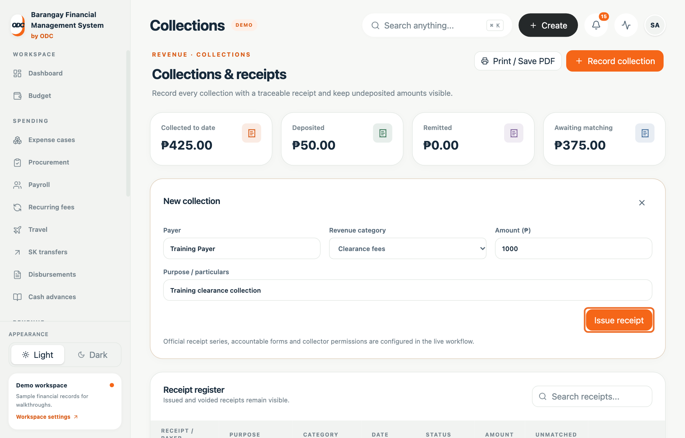
Follow these steps in your workspace. Where shown, an orange outline marks the control to use.
Current live actor: Super admin · Intended staff owner: Treasurer · Screen: Deposits & remittances
Select Bank deposit or Treasury remittance.
Fill Depository bank or Remittance recipient, then Reference / acknowledgement.
Choose one or more Unmatched receipts. The form starts with each selected receipt’s remaining amount.
Enter the amount covered for each selected receipt. Never allocate more than its unmatched balance.
Compare the total with the bank validation or recipient acknowledgement.
Confirm the batch in the Matching register. Review the remaining receipt balance and the Matching report.
Receipt: ₱1,000
First batch: ₱600
Remaining unmatched:
₱400
Allocate the remaining ₱400 in a later batch.
Bank deposit: reduces collected cash on hand and increases bank.
Treasury remittance:
reduces cash on hand; does not increase this workspace’s bank balance.
Follow these steps in your workspace. Where shown, an orange outline marks the control to use.
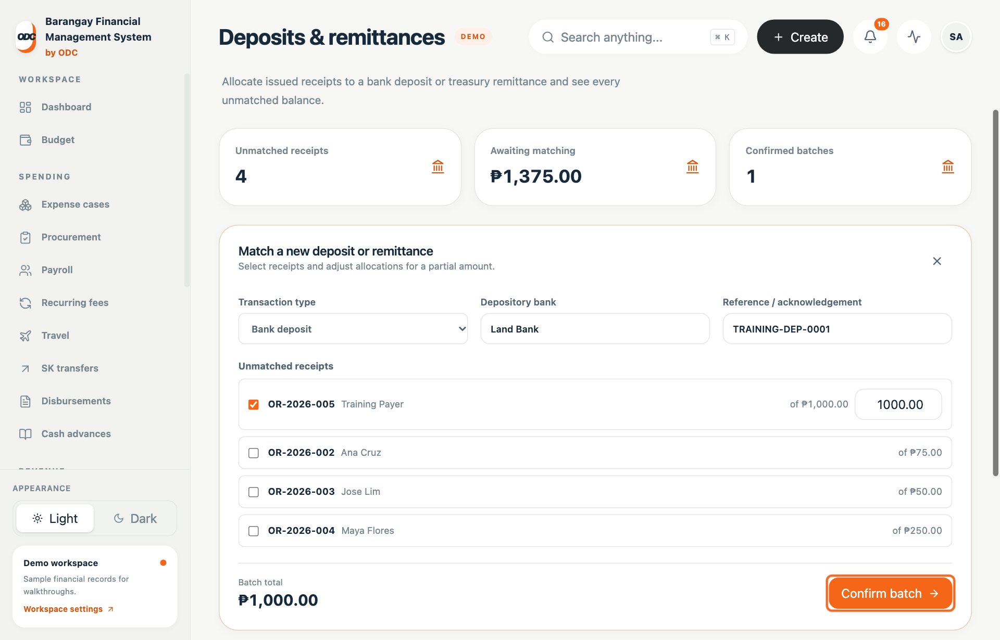
Follow these steps in your workspace. Where shown, an orange outline marks the control to use.
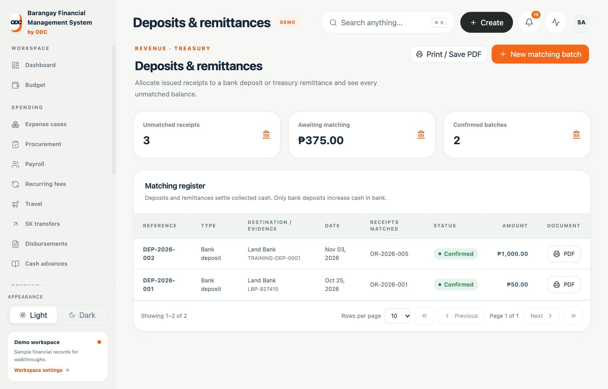
Follow these steps in your workspace. Where shown, an orange outline marks the control to use.
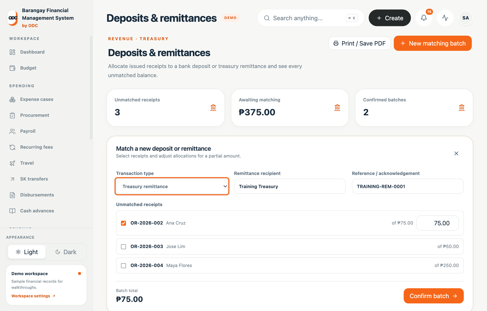
Reports and Audit trail require their page permission. Figures follow the selected financial pages and barangay.
Check the barangay and displayed year. The current report screen has no independent date/fund filter or finalized snapshot selector.
Select the report name on the left. Check whether its badge says preview or template pending.
Reconcile voucher, receipt, allocation or advance details before sharing. Limited roles may see only part of the underlying dataset.
CSV downloads the current table. Print opens browser printing; choose Save as PDF if available. Pending templates have these actions disabled.
Search by action, subject or details and review actor/time information. The live loader currently retrieves up to the latest 200 events.
RAO · SAOB · Summary of checks issued · Cashbook · REAI · Matching of collection and deposit · RCD · RCR · Liquidation report
PBC · RAAF · Transmittal
Approved income estimates are also missing
from the complete REAI. Official layouts and signatories require completion.
Follow these steps in your workspace. Where shown, an orange outline marks the control to use.
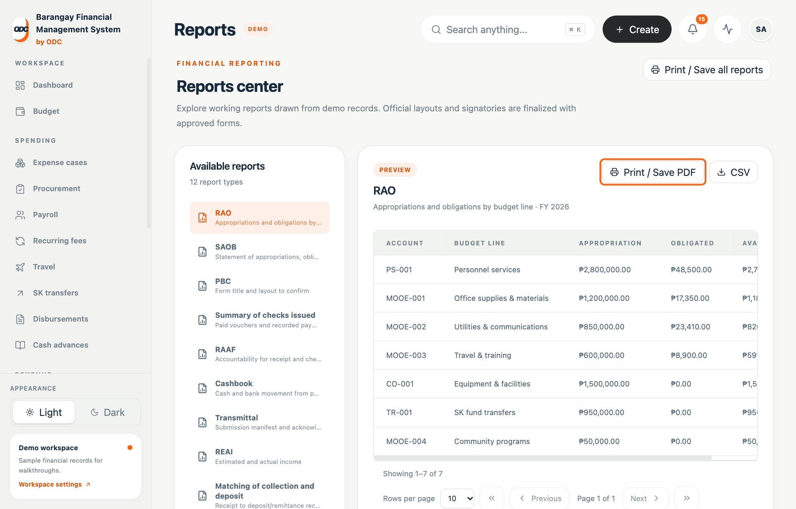
Follow these steps in your workspace. Where shown, an orange outline marks the control to use.
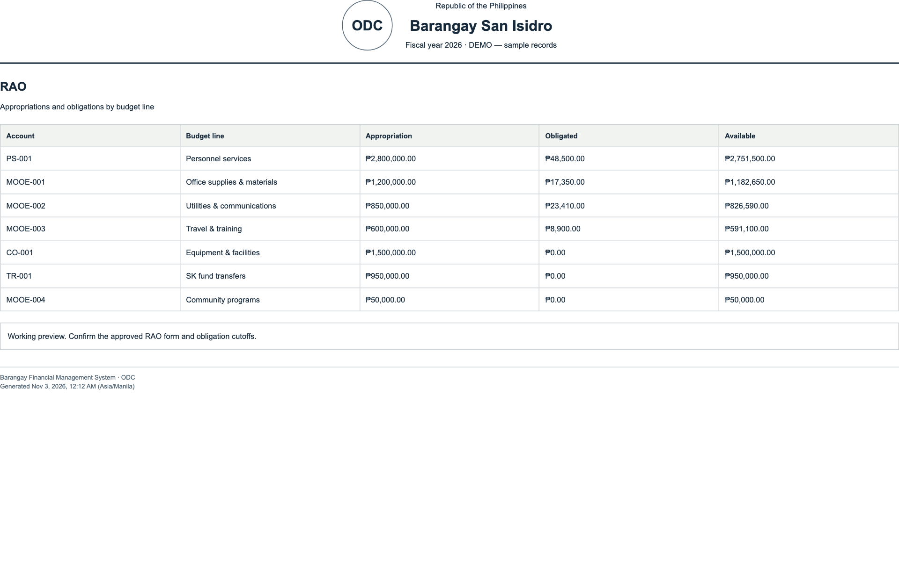
Follow these steps in your workspace. Where shown, an orange outline marks the control to use.
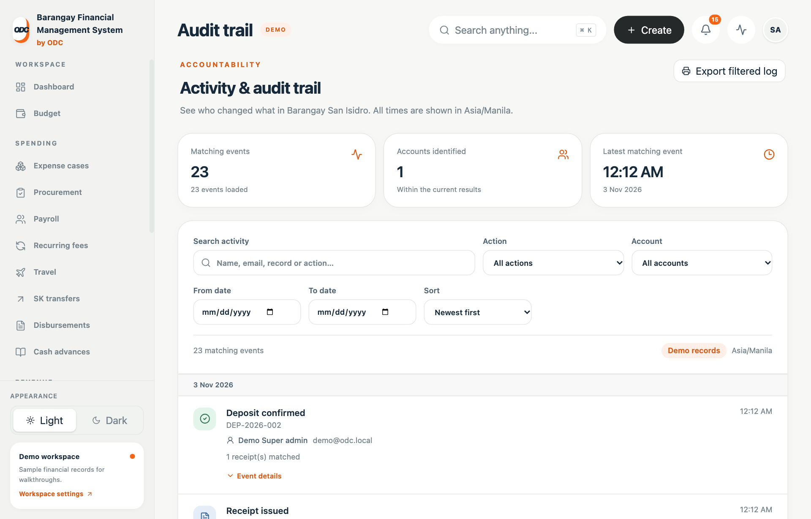
Start with your role below. Each dedicated page gives six numbered steps, an actual screen, live permissions and the next owner.
Current live access: view permitted budget, expense, voucher, advance and report pages. Creating cases, creating DVs and submitting vouchers still require a Super admin. The preparation and submission buttons pictured belong to the demo account.
Current live access: view Procurement, Budget, Dashboard and Reports by default. Advancing stages and creating a DV still require a Super admin. PO in the role name means Procurement officer; PO in the document path means Purchase Order.
Follow the sequence, confirm your allowed actions, then pass the record to the next owner.
Confirm the barangay, payee, purpose, amount and expense type before preparing the record.
Open Budget. Match the expense to its account code and check Available to commit; raise a shortfall to the Budget officer.
Open Expense cases or its workflow. Search for an existing reference. Ask the Super admin to create any missing case; avoid duplicates.
For procurement, wait for Ready for DV. Coordinate Create DV with the Super admin, then locate the draft in Disbursements.
Select the voucher row. Compare the payee, amount, source reference and budget line. Ask the Super admin to Submit for review and confirm submitted status.
Provide the DV and source references with the supporting records. If rejected, coordinate a corrected new case; this version has no return-and-resubmit action.
Follow the sequence, confirm your allowed actions, then pass the record to the next owner.
Open Procurement. Search by PR reference, supplier/payee or purpose and check the amount and current stage.
Confirm the budget line and available balance. Coordinate completion of the PR with the authorized Super admin.
Arrange the quotation records and review work. The Super admin uses Complete RFQ after the stage is ready.
Check the agreed supplier and purchase details. Have the authorized user complete PO on the same case.
Coordinate acceptance and inspection. Have the Super admin complete AIR, then verify Ready for DV.
Give the Encoder / Super admin the case reference and supporting records for Create DV. Procurement alone does not grant Disbursements access.
Start with your role below. Each dedicated page gives six numbered steps, an actual screen, live permissions and the next owner.
Current live access: view permitted budget, expense, voucher, advance and report pages. Adding a budget line or certifying a budget stage is not enabled for the Budget officer. Budget entry requires a Super admin.
Current live access: an assigned Approver can approve or reject submitted vouchers in that barangay when Disbursements is allowed. You cannot approve a voucher you created. Super admins have an audited self-approval exception. No payment authority is granted by Approver alone.
Follow the sequence, confirm your allowed actions, then pass the record to the next owner.
Check the barangay and fiscal year, then obtain the case or DV reference from the preparing user.
Open Budget and search the account code or name. Check the appropriation and category.
Compare the requested amount with Available to commit. Submitted, approved and paid vouchers consume availability.
Open Disbursements and select the voucher row. Match its budget line, amount, payee and source reference to the request.
Open Reports → RAO or SAOB. Compare the visible figures with the budget and voucher registers.
Send the correct code and available balance, or the discrepancy, to the Encoder / Super admin. A new line must be entered by the Super admin.
Follow the sequence, confirm your allowed actions, then pass the record to the next owner.
Open Disbursements. Set the status filter to Submitted and locate the DV by reference or payee.
Check the payee, amount, purpose, source document and budget line in the voucher panel.
Check the source case and required evidence through the established review process. Confirm this is a submitted voucher you may review independently.
Approve a correct voucher; reject one that cannot proceed. The app does not provide Return with reason or editing/resubmission of a rejected DV.
Read the confirmation’s voucher number, payee and amount. Confirm the intended action, then dismiss the completion message.
For approval, confirm approved status and notify the Treasurer. For rejection, notify the preparing user with the DV reference and correction needed.
Start with your role below. Each dedicated page gives six numbered steps, an actual screen, live permissions and the next owner.
Current live access: an assigned Treasurer can record payment for an approved voucher in that barangay when Disbursements is allowed. Opening advances, liquidation entries, receipts and deposit/remittance matching still require a Super admin. Treasurer alone does not grant approval authority.
Current live access: view Collections, Deposits & remittances, Dashboard and Reports by default. Issuing or voiding a receipt and confirming a matching batch still require a Super admin. Demo receipt buttons illustrate the authorized-user workflow.
Follow the sequence, confirm your allowed actions, then pass the record to the next owner.
Open Disbursements → Approved. Select the voucher row and verify the DV number, payee, amount and supporting source.
Confirm the payment has been issued and obtain the real check or transfer reference. The app records payment; it does not send money.
Enter Check / payment reference and choose Record payment. Read and confirm the full amount and reference.
Confirm the paid status, recorded date and reference. Check the checks-issued / cashbook report previews as applicable.
For a paid travel advance, review Cash advances. Coordinate opening, accepted expenses and refunds with the Super admin and accountable person.
Review Collections and Deposits & remittances. Give the Super admin the receipt allocations and bank/treasury evidence needed to confirm a batch.
Follow the sequence, confirm your allowed actions, then pass the record to the next owner.
Confirm the barangay, payer, category, amount and particulars. Open Collections and check whether a receipt already exists.
Give the Super admin the checked details for Record collection → Issue receipt. In live mode that action saves a live receipt record.
Check the generated receipt number, payer, amount and issued status in the register. Keep its reference with the supporting records.
Review Unmatched on the receipt. Recording a collection does not automatically allocate it to a deposit or remittance.
List the receipt numbers, amounts and intended allocations. Provide the actual bank deposit or treasury acknowledgment evidence when available.
Review Deposits & remittances and the Matching / RCD / RCR previews. Ask the Treasurer / Super admin to resolve an unmatched balance or discrepancy.
Start with your role below. Each dedicated page gives six numbered steps, an actual screen, live permissions and the next owner.
Current live access: view all financial pages and Audit trail by default, subject to account page choices. Auditor cannot change transactions, approve vouchers or record payments solely through this role. The visible audit list contains the latest loaded events, not a complete archive.
Current live access: manage non-administrator staff in administered barangays and view permitted financial pages. Only a Super admin can add/change Administrator roles or White label. Financial authority requires its own assigned role; Administrator alone does not grant it.
Current live access: all pages and all supported financial actions across barangays, independent of barangay memberships or custom page restrictions. Own-voucher approval is allowed as an audited exception. Transaction state, amount, budget and duplicate-posting checks still apply.
Follow the sequence, confirm your allowed actions, then pass the record to the next owner.
Confirm the barangay, fiscal year and the records available through your page access before comparing totals.
Compare source case → linked DV → approval state → payment reference. Match the amount and payee across records.
Compare the paid travel DV with accepted expenses, refunds and outstanding balance. Do not count liquidation as a second payment.
Compare issued/voided receipts with deposit/remittance allocations. Check that matched plus unmatched equals the valid receipt amount.
Search action, subject or details and compare actor/time with the financial record. Super admin self-approvals carry an audit exception.
Use report CSV or Print / Save PDF and include record references in follow-up. Ask the responsible owner to investigate any discrepancy.
Follow the sequence, confirm your allowed actions, then pass the record to the next owner.
Open Staff & access and verify the barangay selector before adding or changing a person’s access.
Find the person by name or email. Choose Add staff for a new membership; use the existing account where appropriate.
Enter the person’s details, select Encoder, Procurement, Budget, Approver, Treasurer, Collector or Auditor, and set a temporary password for a new live account.
Review the role defaults and check/uncheck pages. A custom selection replaces the account’s combined role defaults in this barangay.
Choose Add to [barangay], review the confirmation and confirm Add account. Verify role and active status; use Customize pages for later changes.
Review active access and daily outstanding work. Deactivate access when appropriate; refer administrator-role changes or financial corrections to the Super admin.
Follow the sequence, confirm your allowed actions, then pass the record to the next owner.
In live White label, use Onboard barangay, choose its name and sign-in slug, then verify the saved scope. The screenshot shows the demo system editor.
Choose the barangay’s branding scope, set its name/logo/color, review the preview and save. Give the correct sign-in link to its Administrator.
Open Staff & access for the correct barangay. Add its Administrator and staff roles and check their allowed pages.
Add needed budget lines, create source cases, complete procurement stages where applicable, create the linked DV and submit it for review.
Use independent Approver and Treasurer handoffs where assigned. A Super admin can also complete the supported sequence directly; verify confirmations and references.
Record authorized collections, matching and advance settlements as needed. Review Reports and Audit trail for the selected barangay.
Use the exact error or record reference when coordinating with the administrator.
| What you see | What it means | Next step |
|---|---|---|
| Membership pending | Signed in without active access | Administrator assigns/reactivates membership; sign in again. |
| Read-only / recording not enabled | Your account lacks authority for this action | Check the role, barangay and allowed page. Route approval to Approver, payment to Treasurer, and other posting to Super admin. |
| Empty page or partial totals | No visible records, role restriction or loading problem | Check barangay, membership and any load-error banner before assuming no activity. |
| Insufficient appropriation | Submitting would exceed the selected budget | Check coding and current commitments with the Budget officer; resolve through authorized budget action. |
| Approval is not authorized | Permission is missing; ordinary self-approval is blocked | Confirm the assigned Approver role and barangay. Use an independent approver for a voucher you created; Super admin support exceptions are audited. |
| Voucher state or version changed | Another action changed this voucher | Refresh, reopen it, and check its latest status before acting. |
| Receipt linked to a deposit cannot be voided | An allocation already exists | Retain the record and escalate the correction; no allocation reversal UI is provided. |
| Liquidation exceeds remaining balance | Expense + refunds would exceed the advance | Correct the amount. Any excess claim needs a separately authorized process. |
| Cash advance list is empty | No eligible data, permission limit or migration absent | Check paid travel vouchers, your role, and installation of the cash-advance migration. |
| Server could not be reached | Save outcome may be uncertain | Refresh and check the register before retrying, to avoid creating another transaction. |
Reviewed on 31 October 2026 · Based on the local checked-out repository, including current uncommitted screen changes.
Sign-in, account password change, barangay onboarding/branding, staff roles and custom pages, basic budget lines, five expense routes, procurement stages, linked vouchers, review/approval/payment, travel advances, liquidation entries, receipts, partial matching, report previews and audit viewing.
Full quotation/AIR evidence, payroll deductions, recurring schedules, travel forms, detailed SK authorization, attachments, multi-step certification/return, budget versions/adjustments, separate formal obligations, liquidation review/due dates, accountable forms, period close and finalized report templates.
src/lib/auth/roles.tssrc/lib/auth/session.tssrc/app/api/finance/route.tssrc/app/api/staff/route.tssupabase/migrations/
src/features/ — auth, branding, staff, budget, spending,
disbursements, advances, collections, deposits, reports, audit, settings.src/domain/finance.tssrc/data/supabase/workspace-data.tssrc/data/demo/finance-provider.tsx
docs/process-flow.mddocs/implementation-plan.mddocs/implementation-status.md
The current code
takes precedence where these planning documents describe broader future behavior.
“Accounting reviewer” appears in planning but is not a selectable staff role
today.